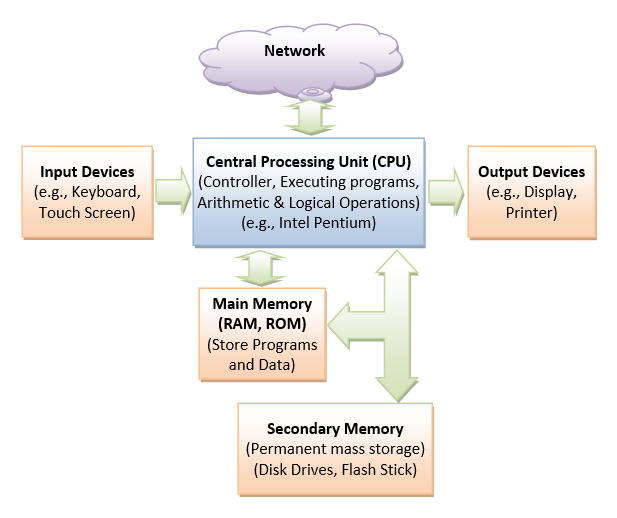
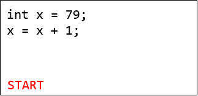
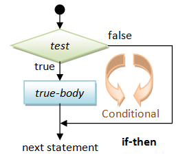
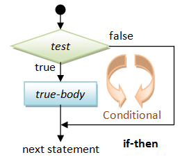

JDK
You should have already installed Java Development Kit (JDK) and written a "Hello-world" program. Otherwise, Read "How to Install JDK".
Programming Text Editor
Do NOT use Notepad (Windows) or TextEdit (macOS) for programming. Install a programming text editor, which does syntax color highlighting. For example,
- For Windows: VS Code, Sublime Text, Atom, NotePad++, TextPad.
- For macOS: VS Code, Sublime Text, Atom, gEdit, jEdit.
- For Ubuntu: VS Code, Sublime Text, Atom, gEdit.
Getting Started - Your First Java Program
Let us revisit the "Hello-world" program that prints a message "Hello, world!" to the display console.
Step 1: Write the Source Code: Enter the following source codes, which defines a class called "Hello", using a programming text editor. Do not enter the line numbers (on the left pane), which were added to aid in the explanation.
Save the source file as "Hello.java". A Java source file should be saved with a file extension of ".java". The filename shall be the same as the classname - in this case "Hello". Filename and classname are case-sensitive.
/*
* First Java program, which says hello.
*/
public class Hello { // Save as "Hello.java"
public static void main(String[] args) { // Program entry point
System.out.println("hello, world"); // Print text message
}
}Step 2: Compile the Source Code: Compile the source code "Hello.java" into Java bytecode (or machine code) "Hello.class" using JDK's Java Compiler "javac".
Start a CMD Shell (Windows) or Terminal (UNIX/Linux/macOS) and issue these commands:
// Change directory (cd) to the directory (folder) containing the source file "Hello.java"
javac Hello.java
Step 3: Run the Program: Run the machine code using JDK's Java Runtime "java", by issuing this command:
java Hello
hello, world
How it Works
/* ...... */
// ... until the end of the current line
These are called comments. Comments are NOT executable and are ignored by the compiler. But they provide useful explanation and documentation to your readers (and to yourself three days later). There are two kinds of comments:
- Multi-Line Comment: begins with
/*and ends with*/, and may span more than one lines (as in Lines 1-3). - End-of-Line (Single-Line) Comment: begins with
//and lasts until the end of the current line (as in Lines 4, 5, and 6).
public class Hello {
......
}
The basic unit of a Java program is a class. A class called "Hello" is defined via the keyword "class" in Lines 4-8. The braces {......} encloses the body of the class.
In Java, the name of the source file must be the same as the name of the class with a mandatory file extension of ".java". Hence, this file MUST be saved as "Hello.java" - case-sensitive.
public static void main(String[] args) {
......
}
Lines 5-7 defines the so-called main() method, which is the entry point for program execution. Again, the braces {......} encloses the body of the method, which contains programming statements.
System.out.println("Hello, world!");
In Line 6, the programming statement System.out.println("Hello, world!") is used to print the string "Hello, world!" to the display console. A string is surrounded by a pair of double quotes and contain texts. The text will be printed as it is, without the double quotes. A programming statement ends with a semi-colon (;).
Java Programming Steps

The steps in writing a Java program is illustrated as above:
Step 1: Write the source code "Xxx.java".
Step 2: Compile the source code "Xxx.java" into Java portable bytecode (or machine code) "Xxx.class" using the JDK's Java compiler by issuing the command "javac Xxx.java".
Step 3: Run the compiled bytecode "Xxx.class", using the JDK's Java Runtime by issuing the command "java Xxx".
Computer Architecture

The Central Processing Unit (CPU) is the heart of a computer, which serves as the overall controller of the computer system. It fetches programs/data from main memory and executes the programs. It performs the arithmetic and logical operations (such as addition and multiplication).
The Main Memory stores the programs and data for execution by the CPU. It consists of RAM (Random Access Memory) and ROM (Read-Only Memory). RAM is volatile, which losses all its contents when the power is turned off. ROM is non-volatile, which retains its contents when the power is turned off. ROM is read-only and its contents cannot be changed once initialized. RAM is read-write. RAM and ROM are expensive. Hence, their amount is quite limited.
The Secondary Memory, such as disk drives and flash sticks, is less expensive and is used for mass and permanent storage of programs and data (including texts, images and video). However, the CPU can only run programs from the main memory, not the secondary memory.
When the power is turned on, a small program stored in ROM is executed to fetch the essential programs (called operating system) from the secondary memory to the main memory, in a process known as booting. Once the operating system is loaded into the main memory, the computer is ready for use. This is, it is ready to fetch the desired program from the secondary memory to the main memory for execution upon user's command.
The CPU can read data from the Input devices (such as keyboard or touch pad) and write data to the Output devices (such as display or printer). It can also read/write data through the network interfaces (wired or wireless).
You job as a programmer is to write programs, to be executed by the CPU to accomplish a specific task.
Java Terminology and Syntax
Comments: A multi-line comment begins with /* and ends with */, and may span multiple lines. An end-of-line (single-line) comment begins with // and lasts till the end of the current line. Comments are NOT executable statements and are ignored by the compiler. But they provide useful explanation and documentation. I strongly suggest that you write comments liberally to explain your thought and logic.
Statement: A programming statement performs a single piece of programming action. It is terminated by a semi-colon (;), just like an English sentence is ended with a period, as in Lines 6.
Block: A block is a group of programming statements enclosed by a pair of braces {}. This group of statements is treated as one single unit. There are two blocks in the above program. One contains the body of the class Hello. The other contains the body of the main() method. There is no need to put a semi-colon after the closing brace.
Whitespaces: Blank, tab, and newline are collectively called whitespace. Extra whitespaces are ignored, i.e., only one whitespace is needed to separate the tokens. Nonetheless, extra whitespaces improve the readability, and I strongly suggest you use extra spaces and newlines to improve the readability of your code.
Case Sensitivity: Java is case sensitive - a ROSE is NOT a Rose, and is NOT a rose. The filename, which is the same as the class name, is also case-sensitive.
Java Program Template
You can use the following template to write your Java programs. Choose a meaningful "Classname" that reflects the purpose of your program, and write your programming statements inside the body of the main() method. Don't worry about the other terms and keywords now. I will explain them in due course. Provide comments in your program!
/*
* Comment to state the purpose of the program
*/
public class Classname { // Choose a meaningful Classname. Save as "Classname.java"
public static void main(String[] args) { // Entry point of the program
// Your programming statements here!!!
}
}Output via System.out.println() and System.out.print()
You can use System.out.println() (print-line) or System.out.print() to print text messages to the display console:
System.out.println(aString)(print-line) printsaString, and advances the cursor to the beginning of the next line.System.out.print(aString)printsaStringbut places the cursor after the printed string.System.out.println()without parameter prints a newline.
Try the following program and explain the output produced:
/*
* Test System.out.println() (print-line) and System.out.print().
*/
public class PrintTest { // Save as "PrintTest.java"
public static void main(String[] args) {
System.out.println("Hello world!"); // Advance the cursor to the beginning of next line after printing
System.out.println("Hello world again!"); // Advance the cursor to the beginning of next line after printing
System.out.println(); // Print an empty line
System.out.print("Hello world!"); // Cursor stayed after the printed string
System.out.print("Hello world again!"); // Cursor stayed after the printed string
System.out.println(); // Print an empty line
System.out.print("Hello,");
System.out.print(" "); // Print a space
System.out.println("world!");
System.out.println("Hello, world!");
}
}Save the source code as "PrintTest.java" (which is the same as the classname). Compile and run the program.
The expected outputs are:
Hello world! Hello world again! Hello world!Hello world again! Hello, world! Hello, world!
Exercises using System.out.println()
- Write 4 programs, called
PrintCheckerPattern,PrintSquarePattern,PrintTriangularPatternandPrintStarPatternto print each of the following patterns. Use ONESystem.out.println(...)(print-line) statement for EACH LINE of outputs. Take note that you need to print the preceding blanks.* * * * * * * * * * * * * * * * * * * * * * * * * * * * * * * * * * * * * * * * * * * * * * * * * * * * * * * * * * * * * * * * (a) (b) (c) (d)
- Write a program called
PrintSheepPatternto print the following pattern:'__' (oo) /========// / || @@ || * ||----|| VV VV '' ''
Let's Write a Program to Add a Few Numbers
Let us write a program to add FIVE integers and display their sum, as follows:
/*
* Add five integers and display their sum.
*/
public class FiveIntegerSum { // Save as "FiveIntegerSum.java"
public static void main(String[] args) {
int number1 = 11; // Declare 5 integer variables and assign a value
int number2 = 22;
int number3 = 33;
int number4 = 44;
int number5 = 55;
int sum; // Declare an integer variable called sum to hold the sum
sum = number1 + number2 + number3 + number4 + number5; // Compute sum
System.out.print("The sum is "); // Print a descriptive string
// Cursor stays after the printed string
System.out.println(sum); // Print the value stored in variable sum
// Cursor advances to the beginning of next line
}
}Save the source code as "FiveIntegerSum.java" (which is the same as the classname). Compile and run the program.
The expected output is:
The sum is 165
How It Works?
int number1 = 11;
int number2 = 22;
int number3 = 33;
int number4 = 44;
int number5 = 55;
These five statements declare five int (integer) variables called number1, number2, number3, number4, and number5; and assign values of 11, 22, 33, 44 and 55 to the variables respectively, via the so-called assignment operator '='.
Alternatively, you could declare many variables in one statement separated by commas, e.g.,
int number1 = 11, number2 = 22, number3 = 33, number4 = 44, number5 = 55;
int sum;
declares an int (integer) variable called sum, without assigning an initial value - its value is to be computed and assigned later.
sum = number1 + number2 + number3 + number4 + number5;
computes the sum of number1 to number5 and assign the result to the variable sum. The symbol '+' denotes arithmetic addition, just like Mathematics.
System.out.print("The sum is ");
System.out.println(sum);
Line 13 prints a descriptive string. A String is surrounded by double quotes, and will be printed as it is (without the double quotes). The cursor stays after the printed string. Try using println() instead of print() and study the output.
Line 15 prints the value stored in the variable sum (in this case, the sum of the five integers). You should not surround a variable to be printed by double quotes; otherwise, the text will get printed instead of the value stored in the variable. The cursor advances to the beginning of next line after printing. Try using print() instead of println() and study the output.
Exercise
- Follow the above example, write a program called
SixIntegerSumwhich includes a new variable callednumber6with a value of 66 and prints their sum. - Follow the above example, write a program called
SevenIntegerSumwhich includes a new variable callednumber7with a value of 77 and prints their sum. - Follow the above example, write a program called
FiveIntegerProductto print the product of 5 integers. You should use a variable calledproduct(instead ofsum) to hold the product. Use symbol*for multiplication.
What is a Program?

A program is a sequence of instructions (called programming statements), executing one after another in a predictable manner.
Sequential flow is the most common and straight-forward, where programming statements are executed in the order that they are written - from top to bottom in a sequential manner, as illustrated in the following flow chart.
Example
The following program prints the area and circumference of a circle, given its radius. Take note that the programming statements are executed sequentially - one after another in the order that they were written.
In this example, we use "double" which hold floating-point number (or real number with an optional fractional part) instead of "int" which holds integer.
/*
* Print the area and circumference of a circle, given its radius.
*/
public class CircleComputation { // Save as "CircleComputation.java"
public static void main(String[] args) {
// Declare 3 double variables to hold radius, area and circumference.
// A "double" holds floating-point number with an optional fractional part.
double radius, area, circumference;
// Declare a double to hold PI.
// Declare as "final" to specify that its value cannot be changed (i.e. constant).
final double PI = 3.14159265;
// Assign a value to radius. (We shall read in the value from the keyboard later.)
radius = 1.2;
// Compute area and circumference
area = radius * radius * PI;
circumference = 2.0 * radius * PI;
// Print results
System.out.print("The radius is "); // Print description
System.out.println(radius); // Print the value stored in the variable
System.out.print("The area is ");
System.out.println(area);
System.out.print("The circumference is ");
System.out.println(circumference);
}
}The expected outputs are:
The radius is 1.2 The area is 4.523893416 The circumference is 7.5398223600000005
How It Works?
double radius, area, circumference;
declare three double variables radius, area and circumference. A double variable can hold a real number or floating-point number with an optional fractional part. (In the previous example, we use int, which holds integer.)
final double PI = 3.14159265;
declare a double variables called PI and assign a value. PI is declared final to specify that its value cannot be changed, i.e., a constant.
radius = 1.2;
assigns a value (real number) to the double variable radius.
area = radius * radius * PI;
circumference = 2.0 * radius * PI;
compute the area and circumference, based on the value of radius and PI.
System.out.print("The radius is ");
System.out.println(radius);
System.out.print("The area is ");
System.out.println(area);
System.out.print("The circumference is ");
System.out.println(circumference);
print the results with proper descriptions.
Take note that the programming statements inside the main() method are executed one after another, in a sequential manner.
Exercises
- Follow the above example, write a program called
RectangleComputationto print the area and perimeter of a rectangle, given its length and width (indoubles). You should use 4doublevariables calledlength,width,areaandperimeter. - Follow the above example, write a program called
CylinderComputationto print the surface area, base area, and volume of a cylinder, given its radius and height (indoubles). You should use 5doublevariables calledradius,height,surfaceArea,baseAreaandvolume. Take note that space (blank) is not allowed in variable names.
What is a Variable?
A computer program manipulates (or processes) data. A variable is a storage location (like a house, a pigeon hole, a letter box) that stores a piece of data for processing. It is called variable because you can change the value stored inside.
More precisely, a variable is a named storage location, that stores a value of a particular data type. In other words, a variable has a name, a type and stores a value of that particular type.
- A variable has a name (aka identifier), e.g.,
radius,area,age,height,numStudents. The name is needed to uniquely identify each variable, so as to assign a value to the variable (e.g.,radius = 1.2), as well as to retrieve the value stored (e.g.,radius * radius * 3.14159265). - A variable has a type. Examples of type are:
int: meant for integers (or whole numbers or fixed-point numbers) including zero, positive and negative integers, such as123,-456, and0;double: meant for floating-point numbers or real numbers, such as3.1416,-55.66, having an optional decimal point and fractional part.String: meant for texts such as"Hello","Good Morning!". Strings shall be enclosed with a pair of double quotes.
- A variable can store a value of the declared type. It is important to take note that a variable in most programming languages is associated with a type, and can only store value of that particular type. For example, a
intvariable can store an integer value such as123, but NOT a real number such as12.34, nor texts such as"Hello". The concept of type was introduced into the early programming languages to simplify interpretation of data.
The following diagram illustrates three types of variables: int, double and String. An int variable stores an integer (whole number); a double variable stores a real number (which includes integer as a special form of real number); a String variable stores texts.
Declaring and Using Variables
To use a variable, you need to first declare its name and type, and an optional initial value, in one of the following syntaxes:
type varName; // Declare a variable of a type type varName1, varName2,...; // Declare multiple variables of the SAME type type varName = initialValue; // Declare a variable of a type, and assign an initial value type varName1 = initialValue1, varName2 = initialValue2,... ; // Declare variables with initial values
For examples,
int sum; // Declare a variable named "sum" of the type "int" for storing an integer. // Terminate the statement with a semi-colon. double average; // Declare a variable named "average" of the type "double" for storing a real number. int number1, number2; // Declare 2 "int" variables named "number1" and "number2", separated by a comma. int height = 20; // Declare an "int" variable, and assign an initial value. String msg = "Hello"; // Declare a "String" variable, and assign an initial value.
Take note that:
- Each variable declaration statement begins with a type, and applicable for only that type. That is, you cannot mix 2 types in one variable declaration statement.
- Each statement is terminated with a semi-colon (
;). - In multiple-variable declaration, the variable names are separated by commas (
,). - The symbol
'=', known as the assignment operator, can be used to assign an initial value to a variable, in a declaration statement.
More examples,
int number; // Declare a variable named "number" of the type "int" (integer). number = 99; // Assign an integer value of 99 to the variable "number". number = 88; // Re-assign a value of 88 to "number". number = number + 1; // Evaluate "number + 1", and assign the result back to "number". int sum = 0; // Declare an int variable named "sum" and assign an initial value of 0. sum = sum + number; // Evaluate "sum + number", and assign the result back to "sum", i.e. add number into sum. int num1 = 5, num2 = 6; // Declare and initialize 2 int variables in one statement, separated by a comma. double radius = 1.5; // Declare a variable named "radius", and initialize to 1.5. String msg; // Declare a variable named msg of the type "String". msg = "Hello"; // Assign a double-quoted text string to the String variable. int number; // ERROR: The variable named "number" has already been declared. sum = 55.66; // ERROR: The variable "sum" is an int. It cannot be assigned a double. sum = "Hello"; // ERROR: The variable "sum" is an int. It cannot be assigned a string.
Take note that:
- Each variable can only be declared once. (You cannot have two houses with the same address.)
- In Java, you can declare a variable anywhere inside your program, as long as it is declared before it is being used. (Some older languages require you to declare all the variables at the beginning of the program.)
- Once a variable is declared, you can assign and re-assign a value to that variable, via the assignment operator
'='. - Once the type of a variable is declared, it can only store a value of that particular type. For example, an
intvariable can hold only integer such as123, and NOT floating-point number such as-2.17or text string such as"Hello". - Once declared, the type of a variable CANNOT be changed.
x=x+1?

Assignment in programming (denoted as '=') is different from equality in Mathematics (also denoted as '='). For example, "x=x+1" is invalid in Mathematics. However, in programming, it means compute the value of x plus 1, and assign the result back to variable x.
"x+y=1" is valid in Mathematics, but is invalid in programming. In programming, the RHS (Right-Hand Side) of '=' has to be evaluated to a value; while the LHS (Left-Hand Side) shall be a variable.
That is, evaluate the RHS first, then assign the result to LHS.
Some languages uses := or -> as the assignment operator to avoid confusion with equality.
Basic Arithmetic Operations
The basic arithmetic operations are:
| Operator | Mode | Usage | Meaning | Examplex=5; y=2 |
|---|---|---|---|---|
| + | Binary Unary |
x + y +x |
Addition | x + y returns 7 |
| - | Binary Unary |
x - y -x |
Subtraction | x - y returns 3 |
| * | Binary | x * y | Multiplication | x * y returns 10 |
| / | Binary | x / y | Division | x / y returns 2 |
| % | Binary | x % y | Modulus (Remainder) | x % y returns 1 |
| ++ | Unary Prefix Unary Postfix |
++x x++ |
Increment by 1 | ++x or x++ (x is 6) |
| -- | Unary Prefix Unary Postfix |
--x x-- |
Decrement by 1 | --y or y-- (y is 1) |
Addition, subtraction, multiplication, division and remainder are binary operators that take two operands (e.g., x + y); while negation (e.g., -x), increment and decrement (e.g., ++x, --y) are unary operators that take only one operand.
Example
The following program illustrates these arithmetic operations:
/*
* Test Arithmetic Operations
*/
public class ArithmeticTest { // Save as "ArithmeticTest.java"
public static void main(String[] args) {
int number1 = 98; // Declare an int variable number1 and initialize it to 98
int number2 = 5; // Declare an int variable number2 and initialize it to 5
int sum, difference, product, quotient, remainder; // Declare 5 int variables to hold results
// Perform arithmetic Operations
sum = number1 + number2;
difference = number1 - number2;
product = number1 * number2;
quotient = number1 / number2;
remainder = number1 % number2;
// Print results
System.out.print("The sum, difference, product, quotient and remainder of "); // Print description
System.out.print(number1); // Print the value of the variable
System.out.print(" and ");
System.out.print(number2);
System.out.print(" are ");
System.out.print(sum);
System.out.print(", ");
System.out.print(difference);
System.out.print(", ");
System.out.print(product);
System.out.print(", ");
System.out.print(quotient);
System.out.print(", and ");
System.out.println(remainder);
++number1; // Increment the value stored in the variable "number1" by 1
// Same as "number1 = number1 + 1"
--number2; // Decrement the value stored in the variable "number2" by 1
// Same as "number2 = number2 - 1"
System.out.println("number1 after increment is " + number1); // Print description and variable
System.out.println("number2 after decrement is " + number2);
quotient = number1 / number2;
System.out.println("The new quotient of " + number1 + " and " + number2
+ " is " + quotient);
}
}The expected outputs are:
The sum, difference, product, quotient and remainder of 98 and 5 are 103, 93, 490, 19, and 3 number1 after increment is 99 number2 after decrement is 4 The new quotient of 99 and 4 is 24
How It Works?
int number1 = 98;
int
number2 = 5;
int sum, difference, product, quotient, remainder;
declare all the variables number1, number2, sum, difference, product, quotient and remainder needed in this program. All variables are of the type int (integer).
sum = number1 + number2;
difference = number1 - number2;
product = number1 * number2;
quotient = number1 / number2;
remainder = number1 % number2;
carry out the arithmetic operations on number1 and number2. Take note that division of two integers produces a truncated integer, e.g., 98/5 → 19, 99/4 → 24, and 1/2 → 0.
System.out.print("The sum, difference, product, quotient and remainder of ");
......
prints the results of the arithmetic operations, with the appropriate string descriptions in between. Take note that text strings are enclosed within double-quotes, and will get printed as they are, including the white spaces but without the double quotes. To print the value stored in a variable, no double quotes should be used. For example,
System.out.println("sum"); // Print text string "sum" - as it is
System.out.println(sum); // Print the value stored in variable sum, e.g., 98
++number1;
--number2;
illustrate the increment and decrement operations. Unlike '+', '-', '*', '/' and '%', which work on two operands (binary operators), '++' and '--' operate on only one operand (unary operators). ++x is equivalent to x = x + 1, i.e., increment x by 1.
System.out.println("number1 after increment is " + number1);
System.out.println("number2 after decrement is " + number2);
print the new values stored after the increment/decrement operations. Take note that instead of using many print() statements as in Lines 18-31, we could simply place all the items (text strings and variables) into one println(), with the items separated by '+'. In this case, '+' does not perform addition. Instead, it concatenates or joins all the items together.
Exercises
- Combining Lines 18-31 into one single
println()statement, using'+'to concatenate all the items together. - In Mathematics, we could omit the multiplication sign in an arithmetic expression, e.g.,
x = 5a + 4b. In programming, you need to explicitly provide all the operators, i.e.,x = 5*a + 4*b. Try printing the sum of31times ofnumber1and17times ofnumber2. - Based on the above example, write a program called
SumProduct3Numbers, which introduces one moreintvariable callednumber3, and assign it an integer value of77. Compute and print the sum and product of all the three numbers.
What If Your Need To Add a Thousand Numbers? Use a Loop
Suppose that you want to add all the integers from 1 to 1000. If you follow the previous example, you would require a thousand-line program! Instead, you could use a so-called loop in your program to perform a repetitive task, that is what the computer is good at.
Example
Try the following program, which sums all the integers from a lowerbound (=1) to an upperbound (=1000) using a so-called while-loop.
/*
* Sum from a lowerbound to an upperbound using a while-loop
*/
public class RunningNumberSum { // Save as "RunningNumberSum.java"
public static void main(String[] args) {
final int LOWERBOUND = 1; // Store the lowerbound
final int UPPERBOUND = 1000; // Store the upperbound
int sum = 0; // Declare an int variable "sum" to accumulate the numbers
// Set the initial sum to 0
// Use a while-loop to repeatedly sum from the lowerbound to the upperbound
int number = LOWERBOUND;
while (number <= UPPERBOUND) {
// number = LOWERBOUND, LOWERBOUND+1, LOWERBOUND+2, ..., UPPERBOUND for each iteration
sum = sum + number; // Accumulate number into sum
++number; // increment number
}
// Print the result
System.out.println("The sum from " + LOWERBOUND + " to " + UPPERBOUND + " is " + sum);
}
}The expected output is:
The sum from 1 to 1000 is 500500
How It Works?
final int LOWERBOUND = 1;
final int UPPERBOUND = 1000;
declare two int constants to hold the upperbound and lowerbound, respectively.
int sum = 0;
declares an int variable to hold the sum. This variable will be used to accumulate over the steps in the repetitive loop, and thus initialized to 0.
int number = LOWERBOUND;
while (number <= UPPERBOUND) {
sum = sum + number;
++number;
}
This is the so-called while-loop. A while-loop takes the following syntax:

initialization-statement; while (test) { loop-body; } next-statement;
As illustrated in the flow chart, the initialization statement is first executed. The test is then checked. If test is true, the body is executed. The test is checked again and the process repeats until the test is false. When the test is false, the loop completes and program execution continues to the next statement after the loop.
In our example, the initialization statement declares an int variable named number and initializes it to LOWERBOUND. The test checks if number is equal to or less than the UPPERBOUND. If it is true, the current value of number is added into the sum, and the statement ++number increases the value of number by 1. The test is then checked again and the process repeats until the test is false (i.e., number increases to UPPERBOUND+1), which causes the loop to terminate. Execution then continues to the next statement (in Line 18).
A loop is typically controlled by an index variable. In this example, the index variable number takes the value LOWERBOUND, LOWERBOUND+1, LOWERBOUND+2, ...., UPPERBOUND, for each iteration of the loop.
In this example, the loop repeats UPPERBOUND-LOWERBOUND+1 times. After the loop is completed, Line 18 prints the result with a proper description.
System.out.println("The sum from " + LOWERBOUND + " to " + UPPERBOUND + " is " + sum);
prints the results.
Exercises
- Modify the above program (called
RunningNumberSum1) to sum all the numbers from9to899. (Ans:404514) - Modify the above program (called
RunningNumberOddSum) to sum all the odd numbers between1to1000. (Hint: Change the post-processing statement to "number = number + 2". Ans:250000) - Modify the above program (called
RunningNumberMod7Sum) to sum all the numbers between1to1000that are divisible by7. (Hint: Modify the initialization statement to begin from 7 and post-processing statement to increment by 7. Ans:71071) - Modify the above program (called
RunningNumberSquareSum) to find the sum of the square of all the numbers from1to100, i.e.1*1 + 2*2 + 3*3 +...(Hint: Modify thesum = sum + numberstatement. Ans:338350) - Modify the above program (called
RunningNumberProduct) to compute the product of all the numbers from1to10. (Hint: Use a variable calledproductinstead ofsumand initializeproductto 1. Modify thesum = sum + numberstatement to do multiplication on variableproduct. Ans:3628800)
Conditional (or Decision)
What if you want to sum all the odd numbers and also all the even numbers between 1 and 1000? You could declare two variables, sumOdd and sumEven, to keep the two sums. You can then use a conditional statement to check whether the number is odd or even, and accumulate the number into the respective sums. The program is as follows:
/*
* Sum the odd numbers and the even numbers from a lowerbound to an upperbound
*/
public class OddEvenSum { // Save as "OddEvenSum.java"
public static void main(String[] args) {
final int LOWERBOUND = 1;
final int UPPERBOUND = 1000;
int sumOdd = 0; // For accumulating odd numbers, init to 0
int sumEven = 0; // For accumulating even numbers, init to 0
int number = LOWERBOUND;
while (number <= UPPERBOUND) {
// number = LOWERBOUND, LOWERBOUND+1, LOWERBOUND+2, ..., UPPERBOUND for each iteration
if (number % 2 == 0) { // Even
sumEven += number; // Same as sumEven = sumEven + number
} else { // Odd
sumOdd += number; // Same as sumOdd = sumOdd + number
}
++number; // Next number
}
// Print the result
System.out.println("The sum of odd numbers from " + LOWERBOUND + " to " + UPPERBOUND + " is " + sumOdd);
System.out.println("The sum of even numbers from " + LOWERBOUND + " to " + UPPERBOUND + " is " + sumEven);
System.out.println("The difference between the two sums is " + (sumOdd - sumEven));
}
}The expected outputs are:
The sum of odd numbers from 1 to 1000 is 250000 The sum of even numbers from 1 to 1000 is 250500 The difference between the two sums is -500
How It Works?
final int LOWERBOUND = 1;
final int UPPERBOUND = 1000;
declares and initializes the upperbound and lowerbound constants.
int sumOdd = 0;
int sumEven = 0;
declare two int variables named sumOdd and sumEven and initialize them to 0, for accumulating the odd and even numbers, respectively.
if (number % 2 == 0) {
sumEven += number;
} else {
sumOdd += number;
}
This is a conditional statement. The conditional statement can take one these forms: if-then or if-then-else.
 

// if-then if ( test ) { true-body; } // if-then-else if ( test ) { true-body; } else { false-body; }
For a if-then statement, the true-body is executed if the test is true. Otherwise, nothing is done and the execution continues to the next statement. For a if-then-else statement, the true-body is executed if the test is true; otherwise, the false-body is executed. Execution is then continued to the next statement.
In our program, we use the remainder or modulus operator (%) to compute the remainder of number divides by 2. We then compare the remainder with 0 to test for even number.
Furthermore, sumEven += number is a shorthand for sumEven = sumEven + number.
Comparison Operators
There are six comparison (or relational) operators:
| Operator | Mode | Usage | Meaning | Example |
|---|---|---|---|---|
| == | Binary | x == y |
Equal to | |
| != | Binary | x != y |
Not equal to | |
| > | Binary | x > y |
Greater than | |
| >= | Binary | x >= y |
Greater than or equal to | |
| < | Binary | x < y |
Less than | |
| <= | Binary | x <= y |
Less than or equal to |
Take note that the comparison operator for equality is a double-equal sign (==); whereas a single-equal sign (=) is the assignment operator.
Combining Simple Conditions
Suppose that you want to check whether a number x is between 1 and 100 (inclusive), i.e., 1 <= x <= 100. There are two simple conditions here, (x >= 1) AND (x <= 100). In Java, you cannot write 1 <= x <= 100, but need to write (x >= 1) && (x <= 100), where "&&" denotes the "AND" operator. Similarly, suppose that you want to check whether a number x is divisible by 2 OR by 3, you have to write (x % 2 == 0) || (x % 3 == 0) where "||" denotes the "OR" operator.
There are three so-called logical operators that operate on the boolean conditions:
| Operator | Mode | Usage | Meaning | Example |
|---|---|---|---|---|
| && | Binary | x && y |
Logical AND | (x >= 1) && (x <= 100) |
| || | Binary | x || y |
Logical OR | (x < 1) || (x > 100) |
| ! | Unary Prefix | !x |
Logical NOT | !(x == 8) |
For examples:
// Return true if x is between 0 and 100 (inclusive) (x >= 0) && (x <= 100) // AND (&&) // Incorrect to use 0 <= x <= 100 // Return true if x is outside 0 and 100 (inclusive) (x < 0) || (x > 100) // OR (||) !((x >= 0) && (x <= 100)) // NOT (!), AND (&&) // Return true if "year" is a leap year // A year is a leap year if it is divisible by 4 but not by 100, or it is divisible by 400. ((year % 4 == 0) && (year % 100 != 0)) || (year % 400 == 0)
Exercises
- Write a program called
ThreeFiveSevenSumto sum all the running integers from 1 and 1000, that are divisible by 3, 5 or 7, but NOT by 15, 21, 35 or 105. - Write a program called
PrintLeapYearsto print all the leap years between AD999 and AD2010. Also print the total number of leap years. (Hints: use aintvariable calledcount, which is initialized to zero. Increment thecountwhenever a leap year is found.)
Summary
I have presented the basics for you to get start in programming. To learn programming, you need to understand the syntaxes and features involved in the programming language that you chosen, and you have to practice, practice and practice, on as many problems as you could.
Link to "Java References & Resources"